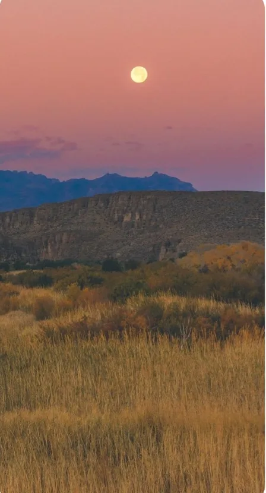
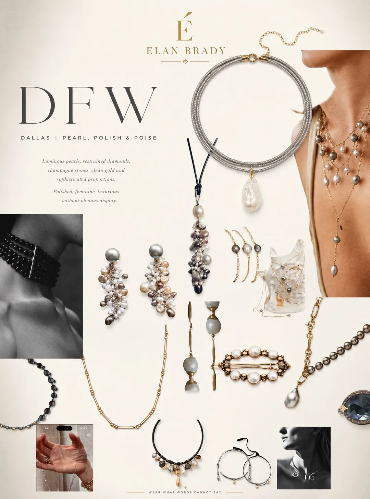
DFW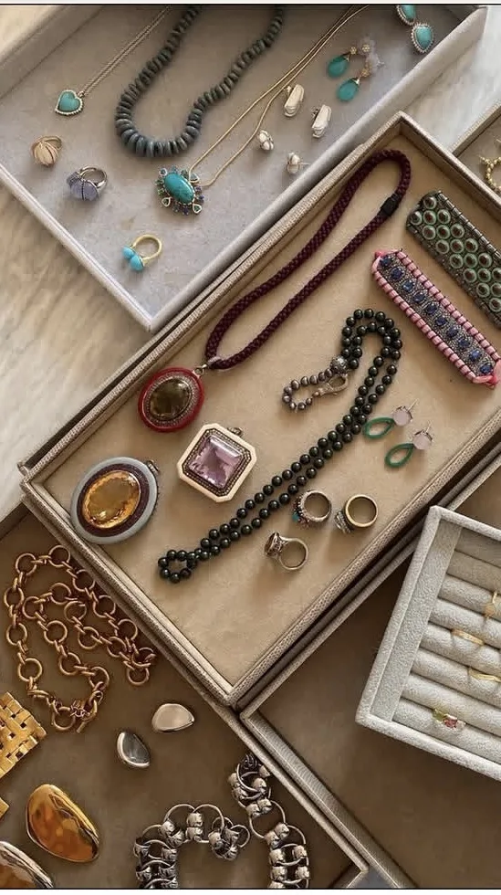
Austin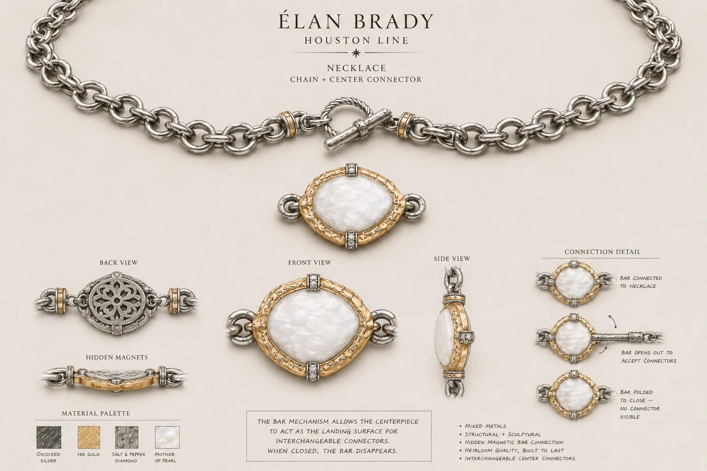
Houston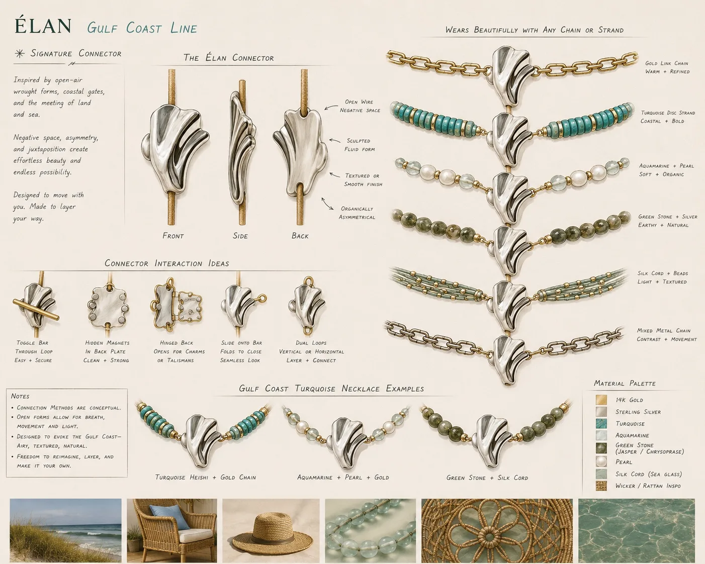
Gulf CoastÉlan Brady creates modern heirlooms inspired by the places we love, the stories we carry, and the faith that connects us — expressed through excellence, never through slogans. One jewelry language, five Texas expressions, every piece made to connect — so a collection grows as beautifully as a story does.
Modern heirlooms — pieces designed to gain meaning, not lose it. Objects that feel as if they already had a life before you found them. One belief holds the house: beautiful things belong together. People. Stones. Stories. Generations.
Fashion jewelry — worn out, not worn in.
Fine jewelry — behind glass, one necklace forever.
individuality · flexibility · meaning · inheritance
In between is what people actually want: pieces with meaning that change with a life — and get handed to the next one. That gap is where this house is built.
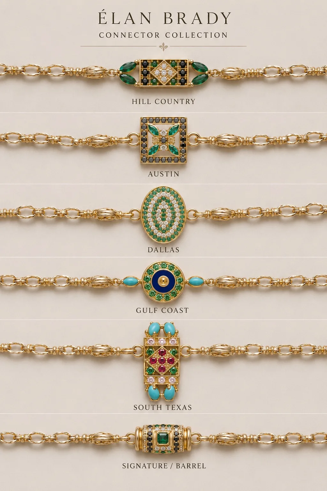
Every strand, connector, centerpiece and charm the house ever makes speaks to every piece that came before it. The Crossroads is not a sixth line — it is the signature that runs through all five.
The engineering is invisible · the beauty is not
Compatibility is handled for you
Blue hour over the metroplex — glass, headlights, a table waiting. Worn with white shirts, denim, black knit, tailored jackets. Pearls you actually live in.
Color and music, asymmetry on purpose. Washed denim, patterned shirts, linen. The piece you found along the way.
The fine-jewelry voice of the house — gemstone mosaics on architectural gold, roughly 80% expressive stone, 20% precious punctuation. Made for daily life, not the vault.
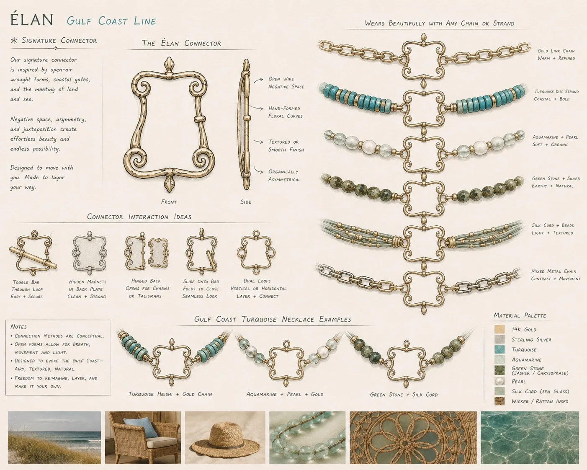
The water line — aquamarine and pearl luster, pale golds, movement like light through the shallows. Linen, bare shoulders, salt air.
Turquoise and sterling, sculptural links, sun and distance. Modern regional character — never costume, never cliché.
Where the house plays. Singular, high-art pieces made once and never repeated — the wildest ideas, the rarest stones, the compositions too personal to produce. Marfa is provenance-forward, collector-priced, and pure joy: proof that a disciplined house can still make art for art's sake.
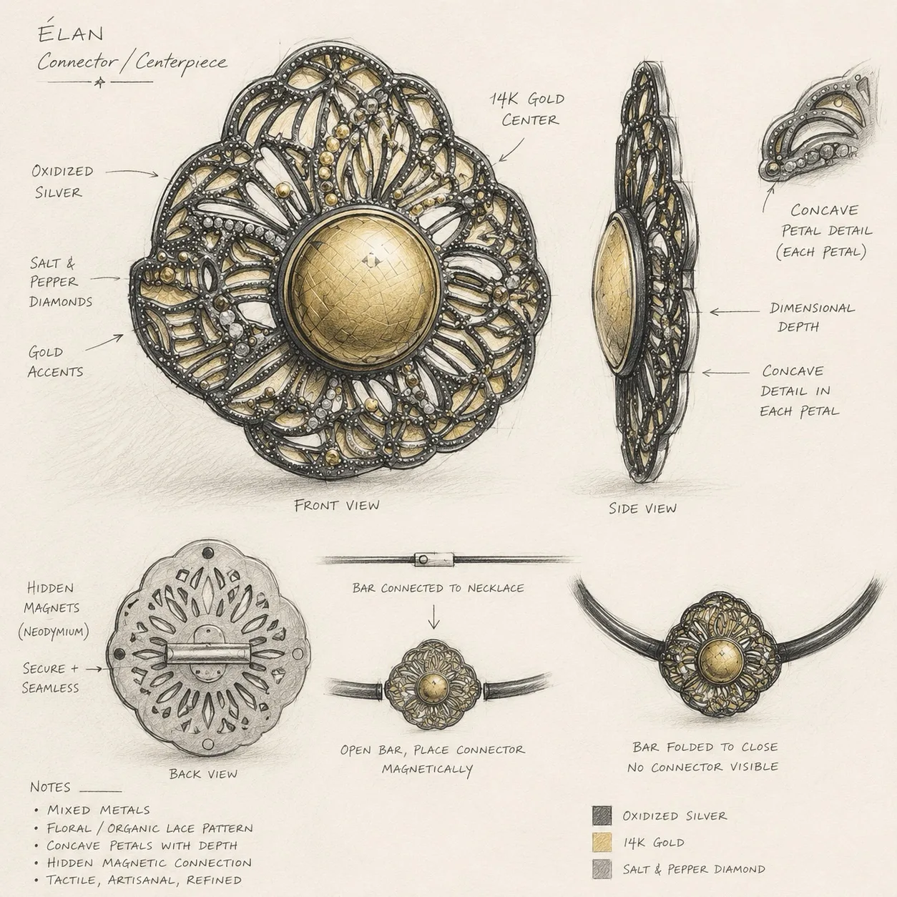
Recycled solid 18k gold · precious & fine gemstones · natural / lab always disclosed
Solid 14k gold · natural stones · disclosed lab diamonds · the daily fine tier
Sterling & oxidized sterling · solid gold accents · expressive stones, pearls, turquoise
Gold-filled · vermeil · silk · leather · brass — accurately disclosed, never called solid gold
An 18k centerpiece + a 14k connector + a silk strand — each honest at its own tier. That is what makes luxury approachable without ever compromising trust.
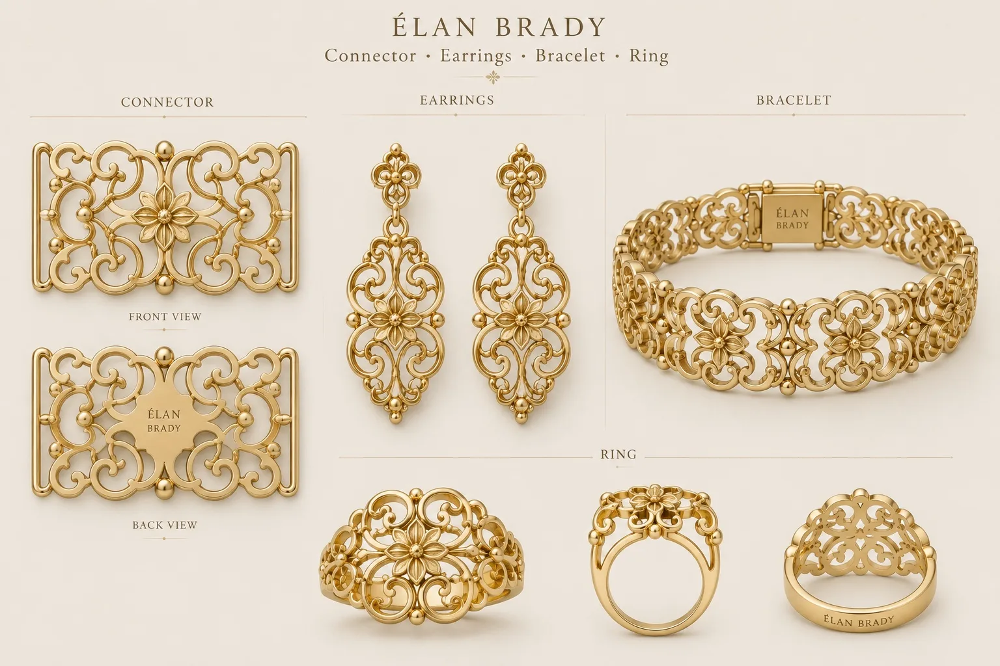
Every piece begins at Jeni's bench. Studio-made work ships from day one at MOQ of one — the highest-margin, fastest-learning tier of the house.
Goldsmiths in Porto for casting, setting and hand finishing — repeatable excellence in solid gold and sterling at genuinely small production lots, so inventory risk stays low.
3D-precision specialists produce the invisible architecture: connector bodies, master patterns, moving parts — engineered once, reused across every line forever.
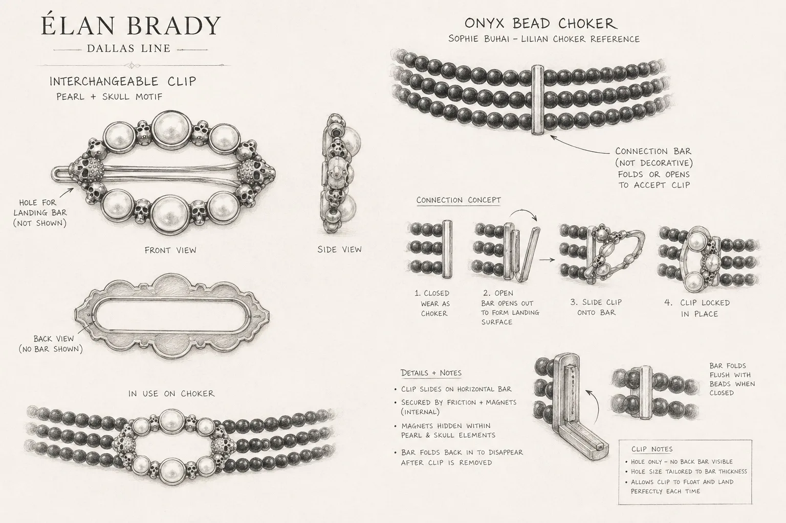
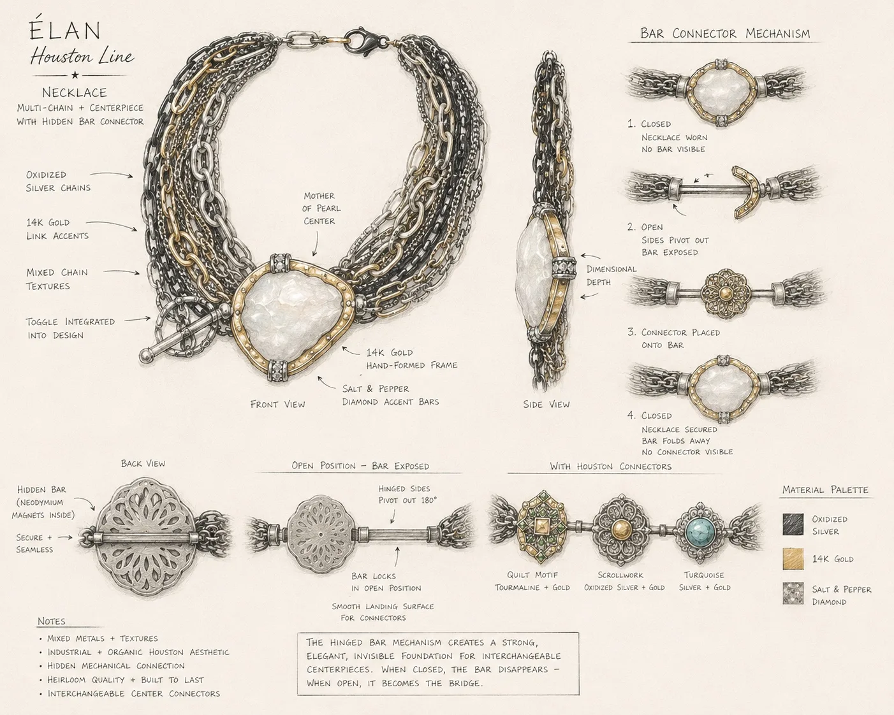
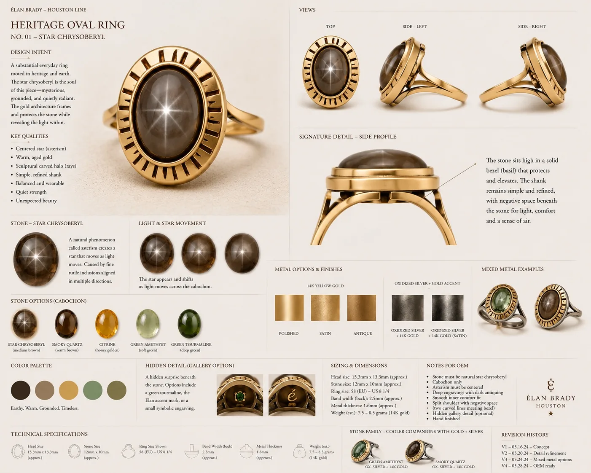
35 SKUs · launch mid-year · DTC only · AOV ≈ $425 · ~550 orders · community begins
50 SKUs · ~30% repeat rate · connector ecosystem compounds · events & first accessories
Accessories + first clothing capsule · wholesale pilot · collector community · Marfa releases
Launch · Year 1
Depth · Year 2
Belts · Silk · Leather
First capsule · Year 3
Because the connector language is shared, a belt, a silk scarf, even a linen shirt can carry the same hardware — every category multiplies the value of every piece a collector already owns. And Marfa crowns it all: one-of-one art that keeps the house dreaming in public.
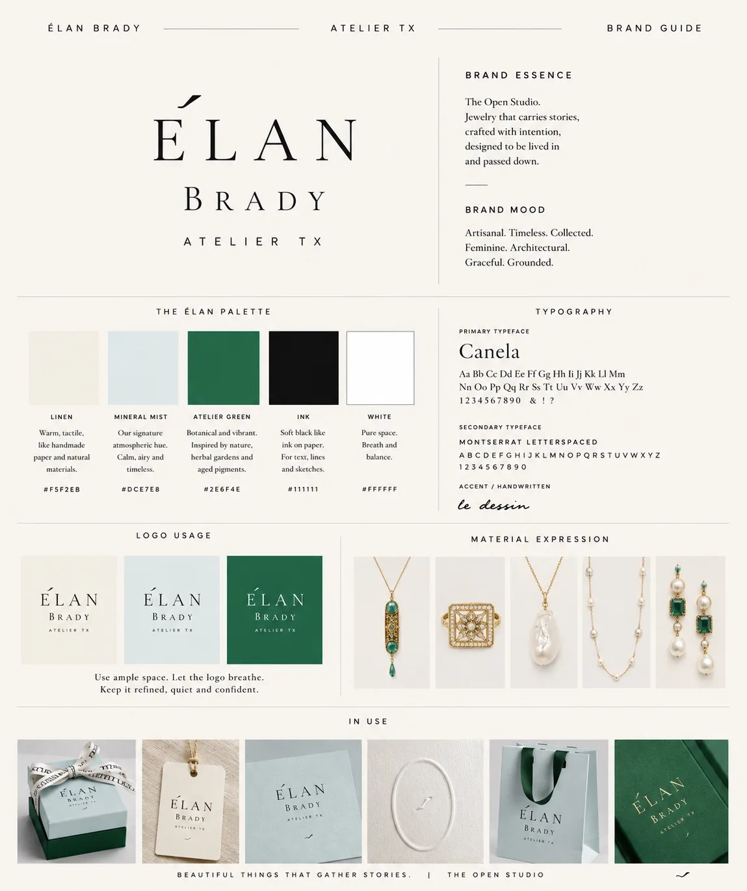
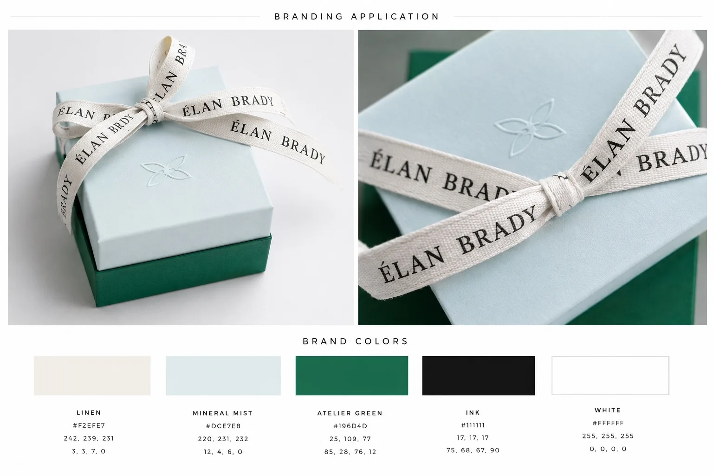
Enter through the deep-green door. Hear the studio before you see it. Open drawers, gather a handful of pearls and stones into your own tray, hear the stories, build a piece — the system quietly handles what fits.
The immersion is always optional. A ready-to-buy customer reaches product, price, availability, cart and checkout from anywhere in one tap. The door never blocks the till.
A coordinated AI intelligence runs the research, vendors, numbers, calendar and follow-ups —
and surfaces only the few decisions that need a founder's judgment.
SO THE FOUNDER'S HANDS STAY ON THE WORK — NOT THE PAPERWORK
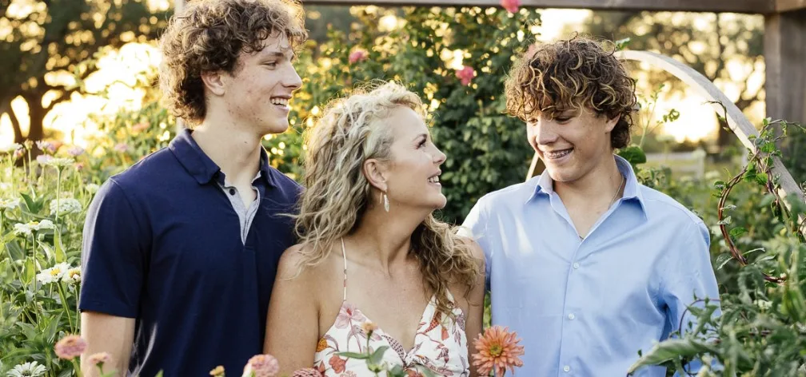